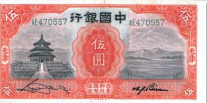
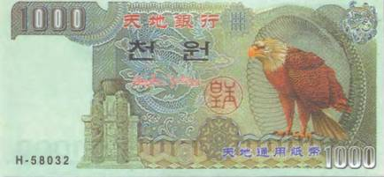
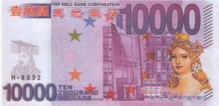
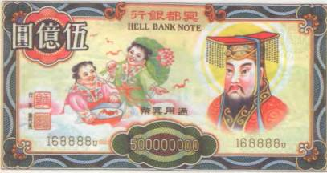
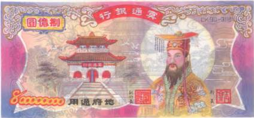
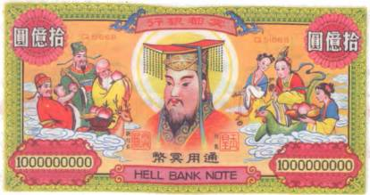
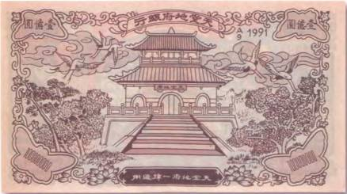
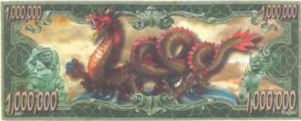

Тайны бумажных денег : Страсти загробного мира. Деньги мертвых
 Страсти загробного мира
Страсти загробного мираДеньги мертвых

Вера в загробную жизнь распространена у подавляющего большинства народов земли. Но такого разнообразия представлений людей о жизни после смерти, какое встречается в Азии, еще нужно поискать. У азиатов общение с духами предков и поклонение им — дело вполне обычное, а само существование бесплотных сущностей никогда не ставилось под сомнение. Известно, что китайские императоры раз в год публично просили прощения у душ казненных за год преступников и всех тех, кто пал жертвами дворцовых и политических интриг владык Поднебесной, чтобы те не вздумали им мстить. И совершался этот ритуал не где-нибудь, а в храме Неба (Тянь Тань), который расположен к юго-востоку от императорского дворца в Запретном городе (Пекин). Этот единственный в столице Китая храм круглой формы, построенный в 1420 г. императором династии Мин — Юн Лэ, можно встретить на лицевой стороне китайской купюры в 5 юаней 1931 г. (рис. 3).
Китайцы ввели в обиход и обряд сожжения ненастоящих денег во время похорон. На сегодняшний день он широко распространен по всей Юго-Восточной Азии. Однако можно смело утверждать, что такое встречается вообще везде, где проживают выходцы из КНР. При этом «деньги мертвых» не всегда сжигаются. Их также разбрасывают на пути похоронной процессии, а иногда оставляют лежать поверх захоронения.
Кстати, в несколько измененном виде традицию передачи денег на тот свет можно наблюдать и у христиан. Например, в некоторых странах Южной и Центральной Америки (Перу, Мексика) денежные купюры вплетают в венки или же ими украшают памятники.
В Китае «деньги мертвых» вместе с другими подарками для душ усопших можно купить в обычных магазинах. Пачка в 30–70 банкнот независимо от номинала обходится родственникам усопшего примерно в 1 американский доллар. Бумага, на которой они печатаются, часто довольно тонкая (существуют купюры и на дорогой лощеной бумаге, а также на картоне). Ведь «деньги мертвых» должны сгорать быстро и дотла. Разнообразие же этих банкнот настолько велико, что количество выпущенных вариантов уже не поддается точному исчислению. Ежегодно в «оборот» поступают все новые и новые серии. По утверждению специалистов, практически каждый уважающий себя населенный пункт в Китае выпускает «в обращение» свои «деньги мертвых». Китай также является и единственным в мире экспортером этой продукции, которая пользуется особым спросом в Сингапуре, на Тайване, в Малайзии и Соединенных Штатах Америки.

Необходимо добавить, что художники, отвечающие за яркое оформление этих оригинальных платежных средств, внимательно следят за изменениями на мировом рынке бумажных денег. Появление новых защитных элементов на банкнотах ведущих держав тут же отражается и на художественном исполнении «денег мертвых» (рис. 4, 5).
Точную дату появления первых подобных банкнот назвать трудно. А все потому, что на них отсутствует датировка. Многие специалисты в этой области собирательства, а на сегодняшний день на тему «денег мертвых» написана уже не одна докторская диссертация и выпущены довольно подробные каталоги, называют в качестве официальной даты выхода первой купюры 1968 г. Однако известно, что самые старые из бон своим дизайном и изображениями сильно походили на бумажные денежные знаки, обращавшиеся в Азии еще в колониальные времена. Кроме того, существуют документированные свидетельства, что «жертвенные деньги» во время перенесения тела усопшего к могиле разбрасывались по пути в качестве жертвоприношения духам и в прежние века. Существовали даже определенные правила, где именно их следовало сжигать. Например, перед храмами, воротами и мостами, а также колодцами. А если учесть, что и первые в истории человечества печатные денежные знаки появились в Поднебесной, то можно предположить, что и первые «деньги мертвых» появились очень давно. Но, к сожалению собирателей банкнот, из тех первых «выпусков» не сохранилось ни одного экземпляра.

Однако этому и не стоит удивляться. Так как «деньги мертвых» предназначаются для усопших, то сохранять их или просто держать дома, по мнению китайцев, нежелательно. Ведь таким образом живые лишают мертвых их «законного» богатства. Отсюда следует, что наиболее полные собрания платежных средств потустороннего мира сохранились в Европе и Америке, где коллекционирование этих во всех отношениях экзотических бон становится все более популярным. В Америке уже с конца 90-х гг. прошлого века существуют даже специальные клубы коллекционеров «денег мертвых», которые насчитывают не одну сотню членов. Например, в городе Сакраменто. Учредителем этого клуба был некто Бил Этген (Bill Etgen).

Свое название китайские ритуальные деньги получили от обозначения на самих купюрах. Практически на каждой из них написано по-английски «hell bank note» (рис. 6).
В буквальном переводе это звучит как «деньги адского банка», «банкноты ада» или просто «адские деньги». Но так как в представлении китайцев загробный мир не является аналогом ада, каким его себе рисуют (видят) православные, и их отношение к нему далеко не так негативно, как у католиков, то было бы все-таки правильнее называть их деньгами мертвых. Ведь именно для них эти яркие кусочки бумаги и предназначаются. Впрочем, коллекционеры нередко именуют их и деньгами духов. Это словосочетание также пришло к нам из английского языка (spirit money).
Лицевую сторону банкнот обычно украшает портрет императора потустороннего мира. Его еще называют правителем ада (Lord of Hell) (рис. 7).
Китайская легенда утверждает, что этот император однажды и в самом деле правил людьми, но за совершенные на земле тяжкие грехи (по другой версии, в награду за примерное царствование) был сослан в преисподнюю.

Императора ада часто изображают добродушно улыбающимся бородачом в ярких богатых одеждах. У него на голове оригинальный головной убор — символ императорской власти. Точно такие же носили исторические владыки Китая. Рядом с портретом частенько можно встретить и другие изображения. Иногда это счастливо улыбающиеся дети или смущенно прикрывающиеся веерами красотки в кимоно. В другой раз это группа старцев, в которых китайцы без труда узнают известных им с детства богов. Часто на лицевой стороне банкнот нарисованы как обычные, так и мифические птицы и звери. А кроме того, цветущие ветви, плоды гранатового и персикового деревьев. Все эти сюжеты несут определенный мистический смысл, понять который зачастую могут только настоящие знатоки китайской мифологии (рис. 8).
Например персик в даосизме [3]символизирует бессмертие.
Оборотные стороны «мертвых денег» оформлены гораздо скромнее и почти у всех банкнот схожи в своем художественном исполнении. Если лицевая сторона сразу обращает на себя внимание пестротой красок и сюжетов, то оборотная «разочаровывает» безликостью и какой-то блеклостью. За исключением нескольких деталей декора там почти всегда один и тот же рисунок — дворец правителя загробного мира (рис. 9). Лишь изредка рядом появляются охраняющие его божественные животные — драконы, тигры или львы.


В представлении китайских буддистов преисподняя состоит из десяти судов, каждым из которых заправляет один Яма — адское божество, которое одновременно является судьей и правителем соответствующей части ада. Они и вершат суд над душами умерших. При этом каждый из десяти судей спрашивает с грешников и наказывает их лишь за определенные проступки, которые перечислены только в его адской книге. Наказания грешные души отбывают в специально для этих целей приспособленной пещере. На некоторых «деньгах мертвых» можно лицезреть судей преисподней. Зачастую у них строгие, а то и просто свирепые выражения лиц. Оно и понятно. Ведь грешники должны трепетать при виде вершителей своих судеб. До наших дней сохранилось несколько терракотовых, расписанных яркими красками статуэток, датируемых эпохой династии Мин и демонстрирующих того или иного Яму. Возможно, эти изображения и легли в основу известных банкнотных рисунков (рис. 10).
Китайские буддисты верят, что когда человек умирает, его душу в преисподнюю доставляют два демона — Бычья голова и Лошадиная морда. А вот когда душа умершего проходит все десять кругов ада и снова возвращается на землю, чтобы вновь принять участие в лотерее жизни, она обязана посетить дом ведьмы Мен (Менг), которая дает ей выпить зелье, позволяющее забыть, кем был человек в своей прежней жизни. Интересно, что неисправимые грешники возвращаются на землю не в образе какого-нибудь живого существа или растения (это кому как повезет!), а превращаются в демонов. При этом правитель ада награждает их «физическими» недостатками, по вине которых они постоянно испытывают муки. Это могут быть чрезмерно большой желудок, узкий пищевод, зубы-иглы и в придачу ко всему крохотный рот. Чтобы демон постоянно испытывал чувство голода и никогда не мог бы насытиться.

Есть среди ритуальных банкнот и такие, которые выбиваются из общего строя. К ним относится, к примеру, серия купюр, появившаяся в 60-70-х гг. прошлого века. На них увековечены… мировые знаменитости! Правда исключительно те, с жизнью или смертью которых обязательно была связана какая-нибудь тайна… Перед нами три банкноты того самого памятного выпуска, ставшего теперь уже коллекционной редкостью. Все они имеют один и тот же номинал — 1 млн долларов. На одной из них мы видим улыбающееся личико культовой фигуры шоу-бизнеса 1960-х — Мэрилин Монро. С другой на нас несколько печальным взглядом смотрит Джон Кеннеди — один из самых популярных президентов в истории США и тайный любовник Монро. А на третьей запечатлен не менее известный, чем первые двое, генералиссимус Иосиф Сталин.
Что же подтолкнуло китайских художников воспользоваться этими сюжетами? Что послужило основанием для появления именно этой серии? Вопрос весьма интересный! И однозначного ответа на него не найти. Но чтобы приблизиться к разгадке, достаточно уделить чуточку внимания каждой из изображенных персон в отдельности…